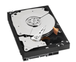
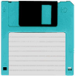

| HDD | Floppy |
|---|---|
|  |  |
| Mágneses felületű adathordozó | Mágneses felületű adathordozó |
| A lemez anyaga fém (merevlemez) | Hajlékony lemez |
| A számítógépbe épített alkatrész | Az információ könnyen átvihető |
| Nagy kapacitású (sok adat fér rá) | Kicsi a kapacitása |
| Gyors és biztonságos | Lassú és könnyen sérül |
A rendszer a mágneses adatrögzítés elvén működik. Alapvetően két fő részből áll össze: az elektronikából és a mechanikából. A két rész akár házilag is ketté választható, azt azonban vegyük figyelembe, hogy ez a termék garanciavesztésével jár. A merevlemezekben mágnesezhető réteggel bevont lemez(ek), illetve a felületen pásztázó fej/fejek találhatóak, melyeket 1-1 motor működtet, a mechanikus rész vezérlését pedig egy elektronika végzi. A mechanikus meghajtóhoz tartozó nyomtatott áramkörön komponensek helyezkednek el. Ezek felelnek a meghajtó teljes vezérléséért, ezzel együtt az alaplapi híd, illetve a HDD közötti kapcsolatért is. A meghajtóban motorok vannak, amik állandó zajt bocsátanak ki működés közben.
A merevlemez egy vagy több korongból áll. Ezen korongok egyik, vagy mindkét felülete egy mágneses tulajdonságokkal rendelkező anyaggal van bevonva, mely az adatokat rögzíti. Mindegyik felszínhez tartozik egy író-olvasó fej, amely olvassa, vagy módosítja a rögzített adatokat. A korongok közös tengelyen forognak egy adott fordulatszámon. A fejek a korongok sugarának irányában mozognak. A felületek általában koncentrikus gyűrűkre , az úgynevezett sávokra (track) vannak osztva, ezek pedig szektorokra (sector) oszlanak. A felosztás a merevlemezen való helymegadás és a lemezterület fájloknak történő lefoglalásában játszik szerepet. A merevlemez egy helyének meghatározásához mondhatjuk pl. hogy ''3. felület, 5. sáv, 7. szektor''(Általában egy szektor 512
byte-nyi adatot tartalmaz.).
A legújabb típusú számítógépes adattároló technológia az ún. flash-memória, amelyet – nevével ellentétben – általában nem a számítógép operatív táraként alkalmaznak, hanem háttértárként. A flash-memória teljesen elektronikus elven működik, nem tartalmaz mozgó alkatrészt, ezért jobban ellenáll a mechanikai behatásoknak (pl. a rázkódásnak), mint a merevlemez.
A flash-memória a – RAM-mal ellentétben – nem felejtő, megmaradó, amely azt jelenti, hogy nincs szüksége
tápfeszültségre ahhoz, hogy a benne tárolt információt megőrizze. (Az adatok rögzítéséhez és olvasásához
természetesen szükséges az elektromos áram, de a tárolt adat az áramellátás megszűnése után is megmarad.) A
flash-memória adattárolási és elérési sebessége viszont jelentősen elmarad a RAM sebességétől, ezért nem
alkalmas arra, hogy operatív tárként alkalmazzák. Tárolókapacitás tekintetében nem veheti fel a versenyt a
merevlemezekkel.
Ráadásul az ismételt írást / törlést kevésbé jól bírja, mint a merevlemez.